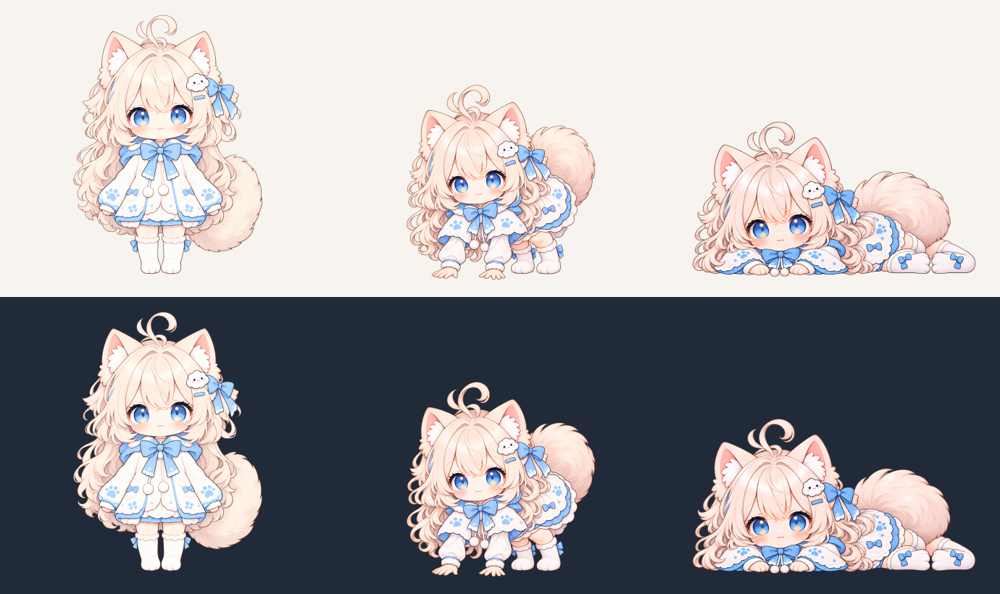

待人工验收。机验通过不代表画风和脚部结构通过。本包含7个帧位、3张独立画面，其中2种姿态新绘；起身反向复用，尚未启动剩余8批。
上排亮底、下排暗底；每排按同一像素密度对照。请重点看脸型、虹膜、头部大小、服装笔触，以及袖口—手掌、膝盖—靴口的连接。

本页仅提供人工切帧，不定义运行时播放速度、概率或停留时间。两只后靴最低行对齐基线；腹部接触点采用衣摆下缘代理，需人工确认。
逐帧实测清单 · 原样校验输出 · 交付说明与未决项 · 完整提示词